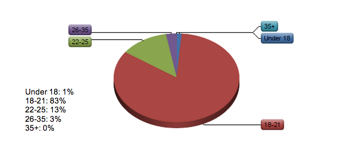

Connecting Alumni & Students
By: Chris Wagoner, Chloe Darlington, Jen Bullock, Joe Crawley
Research Problem
Are the current resources available to connect students at Loyola Marymount University with alumni sufficient in providing associations and possible career opportunities?
Screener Question Data: Age Group

Screener Question Data: Class Standing
First Information Objective
Are students interested in discussing career paths and receiving opportunities through alumni?
First Objective Data Results
First Objective Data Results Cont.
First Objective Data Results Cont.
First Objective Data Results Cont.
First Objective Data Results Cont.
Second Information Objective
Has Loyola Marymount’s Career Development Services been beneficial in providing services that connect students to alumni?
Second Objective Data Results
Please list all current resources you are aware of that connect you to alumni
Second Objective Data Results Cont.
Second Objective Data Results Cont.
Second Objective Data Results Cont.
Third Information Objective
How have students actively sought out Loyola Marymount University Alumni?
If yes, please explain how you contacted an alumni.
Fourth Information Objective
How have alumni actively sought out students at Loyola Marymount University?
Conclusion and Recommendations
Students would like to receive opportunities through alumni |
CDS does not have a current system that easily allows LMU students and alumni to connect |
Website recommendation |
Questions?